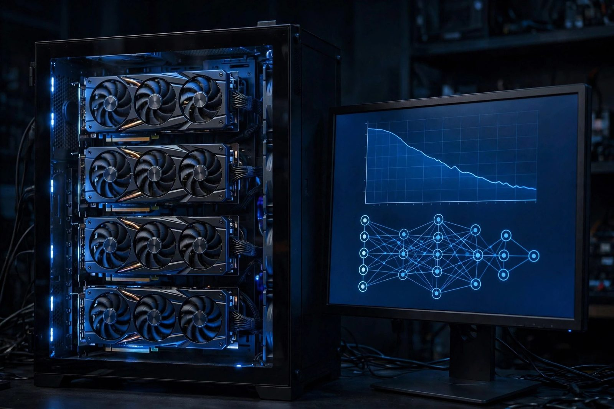

Custom LLM from Scratch
A proposed protocol for training a ~7B parameter transformer from the ground up, served via llama.cpp with a fully custom web interface.

Overview
This page documents a proposed protocol for a fully custom large language model project: the model architecture, the training pipeline, and the web interface, all designed from scratch. Unlike projects that wrap existing models (Llama, Mistral, GPT-J, etc.), this protocol trains weights from random initialization on curated data. The design target is a ~7 billion parameter transformer served on my own server.
Note on naming: an earlier draft of this page called the project "Chakor". That name now belongs to a separate open-source project of mine, Chakor, a self-hosted AI workspace, so this training protocol uses no codename to avoid confusion.
The planned frontend is a full-stack Next.js 15 application featuring authentication, persistent conversation history, an admin dashboard, and integrated web search. The inference path uses no third-party AI APIs and no off-the-shelf model weights; the optional web search integration does call third-party search APIs, so search-augmented queries leave the local environment.
The Model (Proposed Architecture)
The planned architecture is a decoder-only transformer, implemented in PyTorch, following the design patterns established by modern open LLMs but written as an original codebase. Below are the target architectural parameters:
- Parameters: ~7 billion (target; trained from scratch under this protocol)
- Layers: 32 transformer decoder layers
- Attention heads: 32
- Hidden size: 4096
- Architecture: Decoder-only transformer (GPT-style autoregressive)
- Implementation: PyTorch: every layer, loss function, and training loop written by hand
Training (Proposed Protocol)
Training a 7B model from random initialization requires a massive amount of data and sustained compute. The planned training corpus mixes web text, code, and instruction-style data, with a target of over 100 billion tokens. The protocol calls for distributed training across a multi-GPU NVIDIA setup, with duration estimated at several weeks to months depending on the hardware and the training phase.
- Dataset target: 100B+ tokens (web text, code, instruction data)
- Hardware required: Multi-GPU setup (NVIDIA GPUs), distributed training. Budget roughly 12 to 16 bytes of VRAM per parameter for mixed-precision Adam (weights, gradients, and optimizer states), which is over 100 GB for a 7B model before activations, so plain DDP replication needs 80 GB class GPUs or ZeRO/FSDP sharding across smaller cards
- Estimated training duration: Several weeks to months across phases
- Target training loss: ~1.8-2.5 range
- Target perplexity: ~6-12 depending on evaluation set (perplexity is e raised to the loss, so a loss of 1.8-2.5 maps to roughly 6-12)
After pretraining, the protocol includes an instruction tuning phase (supervised fine-tuning on instruction/response pairs) to improve the model's ability to follow prompts and maintain coherent multi-turn conversations, the same technique used to turn a raw pretrained model into a useful chat assistant.
Inference (Planned)
After training, the PyTorch weights would be converted to GGUF format for efficient inference with llama.cpp. GGUF enables quantized, low-overhead inference on both CPU and GPU without the full PyTorch runtime. The plan is to run the model continuously on my server with custom prompt formatting and context window management.
- Inference engine: llama.cpp
- Weight format: GGUF (converted from PyTorch checkpoint)
- Optimizations: Quantization for low-latency CPU/GPU inference
- Availability target: 24/7 on self-hosted server
The Web Interface (Planned)
The web application serving the model is planned as a full frontend and backend build rather than an off-the-shelf chat UI dropped in front of the inference server.
Stack
- Frontend: Next.js 15, React, Tailwind CSS
- Backend: Node.js with Next.js API routes
- Inference backend: llama.cpp (custom REST integration)
- Reverse proxy: Nginx with WebSocket and SSE support
- SSL: Let's Encrypt / Certbot with automated renewal
Features
- Authentication system, custom-built user registration, login, and session management
- Persistent conversations, full conversation history saved and retrievable per user
- Admin dashboard, server monitoring, model status, user management
- Web search integration, search APIs surfaced inline during conversations (note: this calls third-party search APIs)
- Streaming responses, real-time token streaming via SSE (server-sent events)
- Custom prompt formatting, tailored to the model's instruction-tuned format
System Architecture
Request Flow
Build Process (Protocol)
Design the Model Architecture
The protocol specifies a decoder-only transformer in PyTorch: 32 layers, 32 attention heads, 4096 hidden dimensions, targeting ~7B parameters. Every component is written by hand: the multi-head self-attention, feed-forward layers, RMSNorm, rotary positional embeddings, and a causal attention mask applied to the scores before the softmax.
# Simplified example of the core attention block
class MultiHeadAttention(nn.Module):
def __init__(self, d_model=4096, n_heads=32):
super().__init__()
self.n_heads = n_heads
self.head_dim = d_model // n_heads
self.q = nn.Linear(d_model, d_model, bias=False)
self.k = nn.Linear(d_model, d_model, bias=False)
self.v = nn.Linear(d_model, d_model, bias=False)
self.out = nn.Linear(d_model, d_model, bias=False)
def forward(self, x):
B, T, C = x.shape
q = self.q(x).view(B, T, self.n_heads, self.head_dim).transpose(1,2)
k = self.k(x).view(B, T, self.n_heads, self.head_dim).transpose(1,2)
v = self.v(x).view(B, T, self.n_heads, self.head_dim).transpose(1,2)
attn = (q @ k.transpose(-2,-1)) / (self.head_dim ** 0.5)
# Causal mask: each position attends only to earlier positions
causal = torch.tril(torch.ones(T, T, device=x.device)).view(1, 1, T, T)
attn = attn.masked_fill(causal == 0, float('-inf'))
attn = F.softmax(attn, dim=-1)
out = (attn @ v).transpose(1,2).reshape(B, T, C)
return self.out(out)Assemble and Preprocess the Training Corpus
The protocol calls for curating a 100B+ token dataset from web text, open-source code repositories, and instruction-style data, with data pipeline scripts to download, clean, tokenize, and shard the data into efficient binary format for streaming during training.
# Tokenize and shard dataset to binary format
python prepare_data.py \
--sources web_text code instruction \
--tokenizer custom_bpe \
--output-dir ./data/shards/ \
--shard-size 500M
# Verify token count
python count_tokens.py ./data/shards/
# Example output: N tokens across M shards (target: 100B+)Pretraining (Distributed, Multi-GPU)
Training would run in a distributed setup across multiple NVIDIA GPUs using PyTorch DDP (DistributedDataParallel), with checkpoints saved periodically and a target final training loss in the 1.8-2.5 range.
# Launch distributed training (example: 8 GPUs on one node)
# ~1M tokens per step (512 sequences x 2048 tokens), so 120k steps lands near the 100B token target
torchrun --nproc_per_node=8 train.py \
--model-config configs/7b.json \
--data-dir ./data/shards/ \
--batch-size 512 \
--lr 3e-4 \
--warmup-steps 2000 \
--max-steps 120000 \
--checkpoint-dir ./checkpoints/ \
--log-interval 100Instruction Tuning (SFT)
After pretraining, the protocol fine-tunes the model on instruction/response pairs using supervised fine-tuning (SFT). This stage teaches the model to follow prompts, maintain context across multi-turn conversations, and produce useful, structured responses rather than raw text completion.
# Instruction tuning on curated chat data
python sft_train.py \
--base-checkpoint ./checkpoints/pretrain_final.pt \
--data instruction_data.jsonl \
--epochs 3 \
--lr 1e-5 \
--output ./checkpoints/sft_final.ptConvert to GGUF for llama.cpp
The final PyTorch checkpoint would be converted to GGUF format in two steps:
convert_hf_to_gguf.py (positional model path, --outfile,
--outtype) produces an F16 GGUF, because the converter only emits
f32/f16/bf16/q8_0, and then the compiled llama-quantize tool produces the
Q4_K_M file. GGUF enables efficient quantized inference without the full PyTorch runtime.
Note that llama-server binds to 127.0.0.1 by default, so --host 0.0.0.0 below is a deliberate choice to listen
on all interfaces.
# Convert PyTorch checkpoint to GGUF. The converter only emits f32/f16/bf16/q8_0,
# so convert to F16 first, then quantize with the compiled llama-quantize tool.
python convert_hf_to_gguf.py ./checkpoints/sft_final/ \
--outfile custom-7b-f16.gguf \
--outtype f16
# Quantize the F16 GGUF to Q4_K_M
./llama-quantize custom-7b-f16.gguf custom-7b-q4_K_M.gguf Q4_K_M
# Start llama.cpp server
./llama-server \
--model ./custom-7b-q4_K_M.gguf \
--host 0.0.0.0 \
--port 8080 \
--ctx-size 4096 \
--n-predict 1024Build the Web App (Next.js Full-Stack)
The web app is planned as a from-scratch Next.js 15 and React build. The backend API routes handle authentication, session management, conversation persistence, and proxying requests to the llama.cpp inference server. The frontend streams responses in real time using SSE.
# Core API route: stream completion from llama.cpp
// app/api/chat/route.ts
export async function POST(req: Request) {
const { messages, conversationId } = await req.json();
const prompt = formatPrompt(messages); // custom prompt formatter
const llamaRes = await fetch('http://localhost:8080/completion', {
method: 'POST',
headers: { 'Content-Type': 'application/json' },
body: JSON.stringify({ prompt, stream: true, n_predict: 1024 }),
});
// Stream tokens directly back to the client
return new Response(llamaRes.body, {
headers: { 'Content-Type': 'text/event-stream' },
});
}Deploy with Nginx + Let's Encrypt
The Next.js app is proxied through Nginx with WebSocket and SSE support enabled. Let's Encrypt provides the SSL certificate, with automatic renewal via a systemd timer.
# Only send "Connection: upgrade" when the client actually asked to upgrade;
# an unconditional upgrade header breaks plain SSE/HTTP streaming.
map $http_upgrade $connection_upgrade {
default upgrade;
'' close;
}
server {
listen 443 ssl;
server_name ai.tyfsadik.org;
location / {
proxy_pass http://localhost:3000;
proxy_http_version 1.1;
proxy_set_header Upgrade $http_upgrade;
proxy_set_header Connection $connection_upgrade;
proxy_set_header Host $host;
proxy_set_header X-Forwarded-Proto $scheme;
# Do not buffer the SSE token stream
proxy_buffering off;
proxy_read_timeout 300s;
proxy_send_timeout 300s;
}
}
# Provision certificate
certbot --nginx -d ai.tyfsadik.orgChallenges & Planned Mitigations
- Training stability at 7B scale: early training runs at this scale commonly diverge from learning rate spikes. Planned mitigation: a cosine LR schedule with a linear warmup phase (2000 steps), gradient clipping at 1.0, and careful weight initialization following the GPT-NeoX paper.
- Data quality at 100B+ tokens: raw web data contains enormous amounts of boilerplate, duplicate content, and low-quality text that degrades model outputs. The protocol includes deduplication and quality filtering scripts to remove near-duplicates, perplexity-filter low-quality documents, and up-sample higher-quality sources like code and curated text.
- GGUF conversion from a custom checkpoint: llama.cpp's conversion scripts expect HuggingFace-compatible checkpoint formats. Since this model is not derived from an HF model, the protocol includes a compatibility shim that maps the custom PyTorch state dict keys to the expected HF format before running the GGUF converter.
-
SSE streaming through the proxy chain: token streaming breaks when any hop
buffers the response; the usual culprit is Nginx's proxy buffering, not the Next.js route
handler. Planned fix:
proxy_buffering offon the stream location and returning the upstream body directly as aReadableStreamfrom the API route. - Context management for multi-turn chat: llama.cpp processes a flat prompt string, not structured messages. The plan includes a custom prompt formatter that assembles the full conversation history into the model's instruction format and truncates it intelligently when the context window is approaching capacity.
-
Nginx timeout on long generations: long outputs can cause Nginx to drop
connections mid-stream. Planned fix:
proxy_read_timeout 300sandproxy_send_timeout 300sin the location block.
What This Protocol Teaches
- Transformer architecture internals: attention, positional encoding, normalization, and how architectural choices affect training dynamics at scale
- Distributed training with PyTorch DDP: gradient synchronization, checkpoint management, and debugging divergence across multiple GPUs
- Large-scale data pipeline engineering: deduplication, quality filtering, tokenization, and efficient sharded binary datasets
- The practical difference between pretraining (learning from raw text) and instruction tuning (learning to follow prompts)
- GGUF format internals and the weight conversion pipeline from PyTorch to llama.cpp
- Full-stack Next.js 15 development: App Router, API routes, and SSE streaming
- Nginx configuration for WebSocket and SSE proxying with long-lived connections
- The full end-to-end lifecycle of a production LLM: architecture → training → conversion → serving → UI
Build plan
Most "private AI" projects wrap someone else's model. This protocol goes further: train the weights from random initialization, on curated data, and serve the result on my own server. That means building both a training pipeline and a product around it.
- Phase 1, design the architecture: A decoder-only transformer in PyTorch: 32 layers, 32 attention heads, 4096 hidden dimensions, roughly 7 billion parameters. Every component, multi-head attention, feed-forward blocks, RMSNorm, rotary embeddings, the causal mask, written by hand.
- Phase 2, assemble the corpus: A training mix of web text, code, and instruction-style data with a target of over 100 billion tokens.
- Phase 3, train at scale: Distributed training across a multi-GPU NVIDIA setup over weeks to months per phase, watching loss curves and gradient norms for instability.
- Phase 4, serve the weights: Export to GGUF and serve with llama.cpp behind Nginx with TLS, streaming tokens to clients over SSE.
- Phase 5, build the product around it: A from-scratch web application: Next.js 15 frontend, custom auth and session management, persistent conversations, an admin dashboard, and inline web search.
What you need
| Category | Item | Notes |
|---|---|---|
| Hardware | Multi-GPU NVIDIA setup with large VRAM | Training a 7B model needs sustained distributed compute |
| Hardware | Inference server with enough RAM or VRAM | To serve the quantized model 24/7 |
| Software | PyTorch, custom training loop, llama.cpp | Hand-written model code plus the GGUF inference runtime |
| Software | Next.js 15, Node.js, Nginx, Let's Encrypt | The custom web interface and its TLS front door |
| Skills | Deep learning fundamentals and distributed training | Mixed precision, gradient clipping, checkpoint management |
| Data | 100B+ token curated corpus | Data quality dominates final model quality |
Challenges and lessons learned
- Training stability: loss spikes can waste days of compute if caught late. Lesson: log aggressively, checkpoint often, and automate alerts on gradient norms.
- Data curation at scale: filtering 100B+ tokens without destroying diversity is a project of its own. Lesson: build the data pipeline before renting the GPUs, and sample-inspect every stage.
- Evaluation honesty: a custom model needs real benchmarks, not vibes. Lesson: hold out evaluation sets from the start and track them across checkpoints.
What is next
- Run continued pretraining on domain-specific corpora to sharpen expertise areas.
- Add instruction tuning and preference alignment phases.
- Publish evaluation results against standard benchmarks with full methodology.
- Distill smaller variants that run comfortably on consumer GPUs.